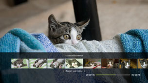
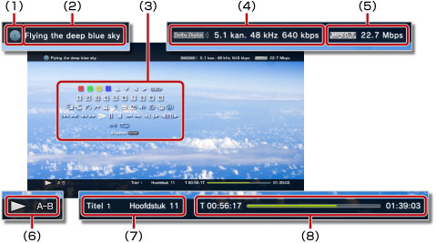

Video > Het bedieningspaneel gebruiken
Het bedieningspaneel gebruiken
Verscheidene handelingen uitvoeren met het bedieningspaneel op het scherm. Het bedieningspaneel kan worden weergegeven of verborgen door te drukken op de  -toets.
-toets.
De pictogrammen die op deze pagina worden weergegeven, hebben de volgende betekenis:
 |
Video opgenomen op een Blu-ray Disc (BD) die enkel kan worden gelezen |
|---|---|
 |
Video opgenomen op een herschrijfbare BD |
 |
Video opgenomen in de AVCHD-indeling |
 |
|
 |
Video opgenomen in VR-modus op DVD-R/DVD-RW |
 |
Videobestanden opgeslagen in de systeemopslag |
 |
Videobestanden opgeslagen op opslagmedia* |
| * |
Een geschikte USB-adapter (niet bijgeleverd) is vereist om opslagmedia met bepaalde modellen te gebruiken. |
|---|
Let op
Aan de weergave van bepaalde inhoud kunnen voorwaarden verbonden zijn die vooraf ingesteld zijn door de ontwikkelaar van de inhoud. In dergelijke gevallen zijn bepaalde items van het bedieningspaneel mogelijk niet beschikbaar.
Rood/Groen/Geel/Blauw pictogrammen


De handelingen uitvoeren die overeenkomen met het pictogram. Functies die aan een pictogram zijn toegewezen, verschillen mogelijk afhankelijk van de inhoud.
Omhoog/Omlaag/Links/Rechts

Een item selecteren.
Bevestigen
Het geselecteerde item bevestigen.
Cijfertoetsen

Cijfers invoeren.
Pop-upmenu
Het pop-upmenu weergeven.
Menu
Het menu weergeven.
Hoofdmenu
Het hoofdmenu weergeven.
Terugkeren
Terugkeren naar een specifiek punt in de video.
Zoeken voor scène

Gebruik deze functie om miniaturen te bekijken die op bepaalde intervallen gemaakt worden. Kies een miniatuur om de video vanaf die scène beginnen af te spelen.

1. |
Gebruik de |
|---|
 -toets of
-toets of  om te selecteren op welk interval de miniaturen gemaakt worden. U kunt [Hoofdstuk] of een van de vele intervallen kiezen.
om te selecteren op welk interval de miniaturen gemaakt worden. U kunt [Hoofdstuk] of een van de vele intervallen kiezen.2. |
Gebruik de |
|---|
 -toets of
-toets of  om de miniatuur te selecteren voor de scène die u wilt bekijken. De video begint af te spelen vanaf de geselecteerde scène.
om de miniatuur te selecteren voor de scène die u wilt bekijken. De video begint af te spelen vanaf de geselecteerde scène.Opmerkingen
- De optie [Hoofdstuk] kan alleen gekozen worden voor videocontent met hoofdstukinformatie.
- De functie scènes zoeken kan niet gebruikt worden voor videocontent die minder dan een minuut duurt.
- De functie scènes zoeken kan niet gebruikt worden voor bepaalde andere types van videocontent.
- Als u een miniatuur kiest, kunt u de scène gedurende 15 seconden vooraf bekijken.
Ga naar


Afspelen vanaf een bepaald hoofdstuk of bepaalde tijd.
| Titel X | Het titelnummer aangeven. |
|---|---|
| Hoofdstuk X | Het hoofdstuknummer aangeven. |
| XX:XX / XX:XX:XX | De tijd aangeven. |
Opmerking
Afhankelijk van het videobestand, kunt u (Ga naar) mogelijk niet gebruiken.
Hoekopties
Selecteer een van de beschikbare beeldhoeken voor inhoud die is opgenomen met meerdere beeldhoeken.
Audio-opties
Selecteer een van de beschikbare audio-opties voor inhoud die is opgenomen met meerdere audiosporen.
Ondertitelingsopties
Selecteer een van de beschikbare ondertitelingsopties voor inhoud die is opgenomen met meerdere ondertiteltalen. Ondertitels voor slechthorenden kunnen geselecteerd worden wanneer de inhoud deze optie ondersteund.
Opmerkingen
- Om ondertitels voor slechthorenden weer te geven, selecteert u
 (Instellingen) >
(Instellingen) >  (Video-instellingen) > [Ondertitels voor slechthorenden] en stelt u deze optie in op [Aan].
(Video-instellingen) > [Ondertitels voor slechthorenden] en stelt u deze optie in op [Aan]. - De instelling voor het weergeven van ondertitels voor slechthorenden is alleen beschikbaar op PS3™-systemen die verkocht worden in Noord-Amerika.
Stijlopties - ondertiteling
Selecteer een van de beschikbare weergaveopties voor inhoud die is opgenomen met meerdere ondertitelingsstijlen.
Volume instellen
Het volumeniveau wijzigen voor inhoud die wordt afgespeeld onder  (Video). Selecteer een van negen niveaus.
(Video). Selecteer een van negen niveaus.
Opmerkingen
- Als het volumeniveau te hoog staat, kan het geluid vervormd worden. Verlaag in dat geval het volumeniveau.
- Deze instelling kan worden uitgeschakeld bij gebruik van bepaalde audio-apparaten of bij de uitvoer van bepaalde soorten audio.
AV-instellingen
Instellingen aanpassen met betrekking tot de uitvoer van inhoud afgespeeld onder (Video). De weergegeven items zijn afhankelijk van de inhoud.
| Frame Noise vermindering | Instellen om fijne ruis te verminderen. |
|---|---|
| Block Noise vermindering | Instellen om mozaïekachtige blokruis die op het scherm wordt weergegeven te verminderen. |
| Mosquito Noise vermindering | Dit stelt u in om mosquito-ruis te verminderen die aan de randen van visuele beelden verschijnt. |
| Upscale | Geüpscalede uitvoer inschakelen. De waarde die u instelt, wordt weergegeven in [BD/DVD - Upscalen] onder (Instellingen) > (Video-instellingen). |
| Video-uitvoer formaat | Het video-uitvoerformaat instellen. Selecteer het video-uitvoerformaat voor het afspelen van DVD's of BD's. De waarde die u instelt, wordt weergegeven in [BD/DVD - Video-uitvoer (HDMI)] onder (Instellingen) > (Video-instellingen). |
| Y Pb/Cb Pr/Cr Super-wit | Instellen voor super-wit-scherm. Super-wit-signalen kunnen nu worden uitgevoerd bij het afspelen van een DVD, BD of AVCHD-disc. De waarde die u instelt wordt weergegeven in [Y Pb/Cb Pr/Cr Super-wit (HDMI)] onder (Instellingen) >  (Beeldscherminstellingen). (Beeldscherminstellingen). |
| RGB Full Range | Weergave met RGB full range instellen. De waarde die u instelt wordt weergegeven in [RGB Full Range] onder (Instellingen) > (Beeldscherminstellingen). |
| Dynamic Range controle | De Dynamic Range controle instellen. De functie voor Dynamic Range controle van uw PS3™-systeem in- of uitschakelen tijdens het afspelen van BD's en DVD's met Dolby Digital-geluid. De waarde die u instelt, wordt weergegeven in [BD/DVD - Dynamic Range controle] onder (Instellingen) > (Video-instellingen). |
| Audio-uitvoer formaat | Het audio-uitvoerformaat instellen. Selecteer het audio-uitvoerformaat voor het afspelen van DVD's of BD's. De waarde die u instelt, wordt weergegeven in [BD/DVD - Audio-uitvoer (HDMI)] of [BD - Audio-uitvoerformaat (optisch digitaal)] onder (Instellingen) > (Video-instellingen). |
Tijdopties
Kies ervoor om de verstreken tijd of om de resterende tijd voor een titel of een hoofdstuk weer te geven. Items die worden weergegeven, variëren naargelang de inhoud die wordt afgespeeld.
Schermmodus
| Normaal | Stel deze optie in om de videoweergave aan het scherm aan te passen zonder de verhoudingen te wijzigen. |
|---|---|
| Zoomen | Stel deze optie in om de video op volledige schermgrootte weer te geven zonder de verhoudingen te wijzigen. Gedeeltes van de video aan de boven-, onder-, linker- en rechterkant vallen weg. |
| Volledig scherm | Instellen om de inhoud op het volledige scherm weer te geven door de verhoudingen te wijzigen en het beeld verticaal en horizontaal uit te rekken. |
| Origineel | Stel deze optie in om de video in zijn oorspronkelijke grootte weer te geven. |
Opmerking
Afhankelijk van het videobestand, kunt u de schermmodus mogelijk niet wijzigen.
Pictogram wijzigen
Wijzig het pictogram (miniatuurafbeelding) verbonden aan een videobestand. Tijdens het afspelen van het videobestand, selecteert u (Pictogram wijzigen) wanneer de afbeelding wordt weergegeven die u wenst te gebruiken als pictogram.
Opmerkingen
- Afhankelijk van het videobestand, kunt u het pictogram mogelijk niet wijzigen.
- Een videobestand dat korter is dan twee seconden kan niet als pictogram worden gebruikt.
Verwijderen
Verwijder een videobestand dat wordt afgespeeld.
Weergeven
Weergavestatus en andere verbonden informatie weergeven. De informatie die wordt weergegeven varieert naargelang de inhoud die wordt afgespeeld.

(1) |
Media |
|---|---|
(2) |
Titel |
(3) |
Bedieningspaneel |
(4) |
Geluidscodec/kanaalnummer/samplesnelheid/bitsnelheid |
(5) |
Videocodec/bitsnelheid |
(6) |
Statuspictogram |
(7) |
Titel/hoofdstuk |
(8) |
Verstreken tijd/totale tijd |
Vorige (Terug naar begin)/Volgende
Naar het vorige of volgende hoofdstuk gaan.
Opmerking
Tijdens het afspelen van videobestanden die op een opslagmedium of in de systeemopslag zijn opgeslagen, is  (Volgende) niet beschikbaar. Door
(Volgende) niet beschikbaar. Door  (Vorige) te selecteren zal de weergave opnieuw aan het begin van het videobestand beginnen.
(Vorige) te selecteren zal de weergave opnieuw aan het begin van het videobestand beginnen.
Snel terugspoelen/Snel vooruitspoelen
De inhoud die wordt afgespeeld snel terugspoelen of snel vooruitspoelen. Telkens als u op de  -toets drukt, wijzigt de afspeelsnelheid.
-toets drukt, wijzigt de afspeelsnelheid.
Opmerking
U kunt de rechter joystick van de draadloze controller gebruiken om snel terug en vooruit te spoelen tijdens de weergave van videocontent. Gebruik de rechter joystick om de snelheid te controleren. U kunt de rechter joystick niet gebruiken voor het controleren van de weergavesnelheid wanneer Blu-ray 3D™-content weergegeven wordt.
Afspelen
Het afspelen van inhoud starten.
Opmerking
In de meeste gevallen zal de volgende keer als u video-inhoud afspeelt die tijdens de weergave is gestopt, de weergave hervatten vanaf het punt waar u de vorige keer bent gestopt.
Om vanaf het begin af te spelen, drukt u op de PS-toets om het afspelen te stoppen en het XMB™-menu weer te geven. Selecteer het pictogram, druk op de -toets en selecteer vervolgens [Afspelen vanaf begin] in het optiesmenu.
Pauze
De weergave tijdelijk onderbreken.
Stoppen
Snel (terug)/Snel (vooruit)
Naar een punt in de video gaan dat 15 seconden verder of 15 seconden terug ligt.
Langzaam (terug) / Langzaam (vooruit)
Vorige frame/Volgende frame
Een scène beeld voor beeld afspelen.
A-B herhalen
Een opgegeven fragment van de inhoud herhaaldelijk afspelen.
1. |
Selecteer |
|---|---|
2. |
Druk op de |
Opmerking
Selecteer (A-B herhalen) om de functie A-B herhalen te wissen.
Herhalen
Inhoud herhaaldelijk afspelen.
Opmerking
Selecteer (Herhalen) totdat [Herhalen uit] wordt weergegeven om de functie Herhalen te wissen.